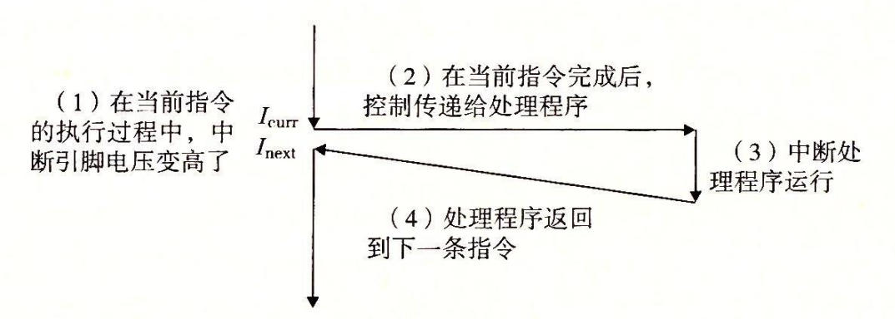

8.1 异常
异常是异常控制流的一种形式，它一部分由硬件实现，一部分由操作系统实现。因为它们有一部分是由硬件实现的，所以具体细节将随系统的不同而有所不同。然而，对于每个系统而言，基本的思想都是相同的。在这一节中我们的目的是让你对异常和异常处理有一个一般性的了解，并且向你揭示现代计算机系统的一个经常令人感到迷惑的方面。
异常（exception）就是控制流中的突变，用来响应处理器状态中的某些变化。图 8-1 展示了基本的思想。

图 8-1 异常的剖析。处理器状态中的变化（事件）触发从应用程序到异常处理程序的突发的控制转移（异常）。在异常处理程序完成处理后，它将控制返回给被中断的程序或者终止
在图中，当处理器状态中发生一个重要的变化时，处理器正在执行某个当前指令 $$I_{curr}$$ 。在处理器中，状态被编码为不同的位和信号。状态变化称为事件（event）. 事件可能和当前指令的执行直接相关。比如，发生虚拟内存缺页、算术溢出，或者一条指令试图除以零。另一方面，事件也可能和当前指令的执行没有关系。比如，一个系统定时器产生信号或者一个 I/O 请求完成。
在任何情况下，当处理器检测到有事件发生时，它就会通过一张叫做异常表（exception table）的跳转表，进行一个间接过程调用（异常），到一个专门设计用来处理这类事件的操作系统子程序（异常处理程序（exception handler））.当异常处理程序完成处理后，根据引起异常的事件的类型，会发生以下 3 种情况中的一种：
- 处理程序将控制返回给当前指令 $$I_{curr}$$ ，即当事件发生时正在执行的指令。
- 处理程序将控制返回给 $$I_{next}$$ ，如果没有发生异常将会执行的下一条指令。
- 处理程序终止被中断的程序。
8.1.2 节将讲述关于这些可能性的更多内容。
旁注 - 硬件异常与软件异常
C++ 和 Java 的程序员会注意到术语 “异常” 也用来描述由 C++ 和 Java 以 catch、throw 和 try 语句形式提供的应用级 ECF。如果想严格清晰，我们必须区别 “硬件” 和“软件” 异常，但这通常是不必要的，因为从上下文中就能够很清楚地知道是哪种含义。
8.1.1 异常处理
异常可能会难以理解，因为处理异常需要硬件和软件紧密合作。很容易搞混哪个部分执行哪个任务。让我们更详细地来看看硬件和软件的分工吧。
系统中可能的每种类型的异常都分配了一个唯一的非负整数的异常号（exception number）。其中一些号码是由处理器的设计者分配的，其他号码是由操作系统内核（操作系统常驻内存的部分）的设计者分配的。前者的示例包括被零除、缺页、内存访问违例、断点以及算术运算溢出。后者的示例包括系统调用和来自外部 I/O 设备的信号。
在系统启动时（当计算机重启或者加电时），操作系统分配和初始化一张称为异常表的跳转表，使得表目 k 包含异常 k 的处理程序的地址。图 8-2 展示了异常表的格式。

在运行时（当系统在执行某个程序时），处理器检测到发生了一个事件，并且确定了相应的异常号 k。随后，处理器触发异常，方法是执行间接过程调用，通过异常表的表目 k，转到相应的处理程序。图 8-3 展示了处理器如何使用异常表来形成适当的异常处理程序的地址。异常号是到异常表中的索引，异常表的起始地址放在一个叫做异常表基址寄存器（exception table base register）的特殊 CPU 寄存器里。

异常类似于过程调用，但是有一些重要的不同之处：
- 过程调用时，在跳转到处理程序之前，处理器将返回地址压入栈中。然而，根据异常的类型，返回地址要么是当前指令（当事件发生时正在执行的指令），要么是下一条指令（如果事件不发生，将会在当前指令后执行的指令）。
- 处理器也把一些额外的处理器状态压到栈里，在处理程序返回时，重新开始执行被中断的程序会需要这些状态。比如，x86-64 系统会将包含当前条件码的 EFLAGS 寄存器和其他内容压入栈中。
- 如果控制从用户程序转移到内核，所有这些项目都被压到内核栈中，而不是压到用户栈中。
- 异常处理程序运行在内核模式下（见 8.2.4 节），这意味着它们对所有的系统资源都有完全的访问权限。
一旦硬件触发了异常，剩下的工作就是由异常处理程序在软件中完成。在处理程序处理完事件之后，它通过执行一条特殊的“从中断返回”指令，可选地返回到被中断的程序，该指令将适当的状态弹回到处理器的控制和数据寄存器中，如果异常中断的是一个用户程序，就将状态恢复为用户模式（见 8.2.4 节），然后将控制返回给被中断的程序。
8.1.2 异常的类别
异常可以分为四类：中断（interrupt），陷阱（trap）、故障（fault）和终止（abort）。图 8-4 中的表对这些类别的属性做了小结。
| 类别 | 原因 | 异步/同步 | 返回行为 |
|---|---|---|---|
| 中断 | 来自 I/O 设备的信号 | 异步 | 总是返回到下一条指令 |
| 陷阱 | 有意的异常 | 同步 | 总是返回到下一条指令 |
| 故障 | 潜在可恢复的错误 | 同步 | 可能返回到当前指令 |
| 终止 | 不可恢复的错误 | 同步 | 不会返回 |
图 8-4 异常的类别。异步异常是由处理器外部的 I/O 设备中的事件产生的。同步异常是执行一条指令的直接产物
1. 中断
中断是异步发生的，是来自处理器外部的 I/O 设备的信号的结果。硬件中断不是由任何一条专门的指令造成的，从这个意义上来说它是异步的。硬件中断的异常处理程序常常称为中断处理程序（interrupt handler）。
图 8-5 概述了一个中断的处理。I/O 设备，例如网络适配器、磁盘控制器和定时器芯片，通过向处理器芯片上的一个引脚发信号，并将异常号放到系统总线上，来触发中断，这个异常号标识了引起中断的设备。

在当前指令完成执行之后，处理器注意到中断引脚的电压变高了，就从系统总线读取异常号，然后调用适当的中断处理程序。当处理程序返回时，它就将控制返回给下一条指令（也即如果没有发生中断，在控制流中会在当前指令之后的那条指令）。结果是程序继续执行，就好像没有发生过中断一样。
剩下的异常类型（陷阱、故障和终止）是同步发生的，是执行当前指令的结果。我们把这类指令叫做故障指令（faulting instruction）。
2. 陷阱和系统调用
陷阱是有意的异常，是执行一条指令的结果。就像中断处理程序一样，陷阱处理程序将控制返回到下一条指令。陷阱最重要的用途是在用户程序和内核之间提供一个像过程一样的接口，叫做系统调用。
用户程序经常需要向内核请求服务，比如读一个文件（read）、创建一个新的进程（fork），加载一个新的程序（execve），或者终止当前进程（exit）。为了允许对这些内核服务的受控的访问，处理器提供了一条特殊的 “syscall n” 指令，当用户程序想要请求服务 n 时，可以执行这条指令。执行 syscall 指令会导致一个到异常处理程序的陷阱，这个处理程序解析参数，并调用适当的内核程序。图 8-6 概述了一个系统调用的处理。

从程序员的角度来看，系统调用和普通的函数调用是一样的。然而，它们的实现非常不同。普通的函数运行在用户模式中，用户模式限制了函数可以执行的指令的类型，而且它们只能访问与调用函数相同的栈。系统调用运行在内核模式中，内核模式允许系统调用执行特权指令，并访问定义在内核中的栈。8.2.4 节会更详细地讨论用户模式和内核模式。
3. 故障
故障由错误情况引起，它可能能够被故障处理程序修正。当故障发生时，处理器将控制转移给故障处理程序。如果处理程序能够修正这个错误情况，它就将控制返回到引起故障的指令，从而重新执行它。否则，处理程序返回到内核中的 abort 例程，abort 例程会终止引起故障的应用程序。图 8-7 概述了一个故障的处理。
一个经典的故障示例是缺页异常，当指令引用一个虚拟地址，而与该地址相对应的物理页面不在内存中，因此必须从磁盘中取出时，就会发生故障。就像我们将在第 9 章中看到的那样，一个页面就是虚拟内存的一个连续的块（典型的是 4KB）。缺页处理程序从磁盘加载适当的页面，然后将控制返回给引起故障的指令。当指令再次执行时，相应的物理页面已经驻留在内存中了，指令就可以没有故障地运行完成了。
4. 终止
终止是不可恢复的致命错误造成的结果，通常是一些硬件错误，比如 DRAM 或者 SRAM 位被损坏时发生的奇偶错误。终止处理程序从不将控制返回给应用程序。如图 8-8 所示，处理程序将控制返回给一个 abort 例程，该例程会终止这个应用程序。

8.1.3 Linux/x86-64 系统中的异常
为了使描述更具体，让我们来看看为 x86-64 系统定义的一些异常。有高达 256 种不同的异常类型【50】。0 ∼ 31 的号码对应的是由 Intel 架构师定义的异常，因此对任何 x86-64 系统都是一样的。32 ∼ 255 的号码对应的是操作系统定义的中断和陷阱。图 8-9 展示了一些示例。
| 异常号 | 描述 | 异常类别 |
|---|---|---|
| 0 | 除法错误 | 故障 |
| 13 | 一般保护故障 | 故障 |
| 14 | 缺页 | 故障 |
| 18 | 机器检查 | 终止 |
| 32 ~ 255 | 操作系统定义的异常 | 中断或陷阱 |
图 8-9 x86-64 系统中的异常示例
1. Linux/x86-64 故障和终止
除法错误。当应用试图除以零时，或者当一个除法指令的结果对于目标操作数来说太大了的时候，就会发生除法错误（异常 0）。Unix 不会试图从除法错误中恢复，而是选择终止程序。Linuxshell 通常会把除法错误报告为“浮点异常（Floating exception）”。
一般保护故障。许多原因都会导致不为人知的一般保护故障（异常 13），通常是因为一个程序引用了一个未定义的虚拟内存区域，或者因为程序试图写一个只读的文本段。Linux 不会尝试恢复这类故障。Linux shell 通常会把这种一般保护故障报告为“段故障（Segmentation fault）”。
缺页（异常 14）是会重新执行产生故障的指令的一个异常示例。处理程序将适当的磁盘上虚拟内存的一个页面映射到物理内存的一个页面，然后重新执行这条产生故障的指令。我们将在第 9 章中看到缺页是如何工作的细节。
机器检查。机器检查（异常 18）是在导致故障的指令执行中检测到致命的硬件错误时发生的。机器检查处理程序从不返回控制给应用程序。
2. Linux/86-64 系统调用
Linux 提供几百种系统调用，当应用程序想要请求内核服务时可以使用，包括读文件、写文件或是创建一个新进程。图 8-10 给出了一些常见的 Linux 系统调用。每个系统调用都有一个唯一的整数号，对应于一个到内核中跳转表的偏移量。（注意：这个跳转表和异常表不一样。）
| 编号 | 名字 | 描述 | 编号 | 名字 | 描述 |
|---|---|---|---|---|---|
| 0 | read | 读文件 | 33 | pause | 挂起进程直到信号到达 |
| 1 | write | 写文件 | 37 | alarm | 调度告警信号的传送 |
| 2 | open | 打开文件 | 39 | getpid | 获得进程ID |
| 3 | close | 关闭文件 | 57 | fork | 创建进程 |
| 4 | stat | 获得文件信息 | 59 | execve | 执行一个程序 |
| 9 | mmap | 将内存页映射到文件 | 60 | _exit | 终止进程 |
| 12 | brk | 重置堆顶 | 61 | wait4 | 等待一个进程终止 |
| 32 | dup2 | 复制文件描述符 | 62 | kill | 发送信号到一个进程 |
图 8-10 Linux x86-64 系统中常用的系统调用示例
C 程序用 syscall 函数可以直接调用任何系统调用。然而，实际中几乎没必要这么做。对于大多数系统调用，标准 C 库提供了一组方便的包装函数。这些包装函数将参数打包到一起，以适当的系统调用指令陷入内核，然后将系统调用的返回状态传递回调用程序。在本书中，我们将系统调用和与它们相关联的包装函数都称为系统级函数，这两个术语可以互换地使用。
在 X86-64 系统上，系统调用是通过一条称为 syscall 的陷阱指令来提供的。研究程序能够如何使用这条指令来直接调用 Linux 系统调用是很有趣的。所有到 Linux 系统调用的参数都是通过通用寄存器而不是栈传递的。按照惯例，寄存器 ％rax 包含系统调用号，寄存器 %rdi、%rsi、%rdx、%r10、%r8 和 ％r9 包含最多 6 个参数。第一个参数在 ％rdi 中，第二个在 ％rsi 中，以此类推。从系统调用返回时，寄存器 %rcx 和 ％r11 都会被破坏，％rax 包含返回值。-4095 到 -1 之间的负数返回值表明发生了错误，对应于负的 errno。
例如，考虑大家熟悉的 hello 程序的下面这个版本，用系统级函数 write（见 10.4 节）来写，而不是用 printf：
int main()
{
write(1, "hello, world\n", 13);
_exit(0);
}
write 函数的第一个参数将输出发送到 stdout。第二个参数是要写的字节序列，而第三个参数是要写的字节数。
图 8-11 给出的是 hello 程序的汇编语言版本，直接使用 syscall 指令来调用 write 和 exit 系统调用。第 9 ∼ 13 行调用 write 函数。首先，第 9 行将系统调用 write 的编号存放在 ％rax 中，第 10 ∼ 12 行设置参数列表。然后第 13 行使用 syscall 指令来调用系统调用。类似地，第 14 ∼ 16 行调用 _exit 系统调用。
.section .data
string:
.ascii "hello, world\n"
string_end:
.equ len, string_end - string
.section .text
.globl main
main:
# First, call write(1, "hello, world\n", 13)
movq $1, %rax # write is system call 1
movq $1, %rdi # Arg1: stdout has descriptor 1
movq $string, %rsi # Arg2: hello world string
movq $len, %rdx # Arg3: string length
syscall # Make the system call
# Next, call _exit(0)
movq $60, %rax # _exit is system call 60
movq $0, %rdi # Arg1: exit status is 0
syscall # Make the system call
图 8-11 直接用 Linux 系统调用来实现 hello 程序
旁注 - 关于术语的注释
各种异常类型的术语根据系统的不同而有所不同。处理器 ISA 规范通常会区分异步“中断”和同步“异常”，但是并没有提供描述这些非常相似的概念的概括性的术语。为了避免不断地提到“异常和中断”以及“异常或者中断”，我们用单词“异常”作为通用的术语，而且只有在必要时才区别异步异常（中断）和同步异常（陷阱、故障和终止）。正如我们提到过的，对于每个系统而言，基本的概念都是相同的，但是你应该意识到一些制造厂商的手册会用“异常" 仅仅表示同步事件引起的控制流的改变。